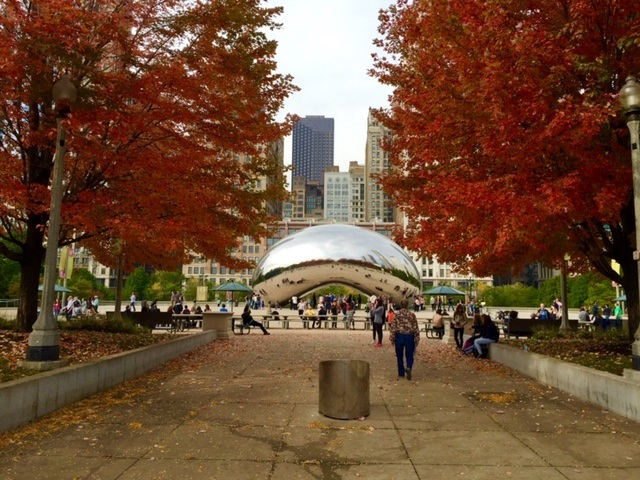
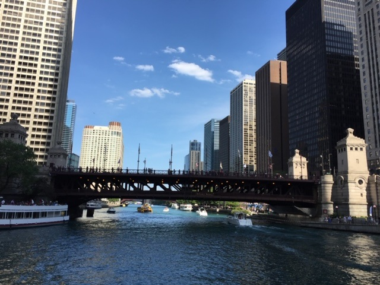
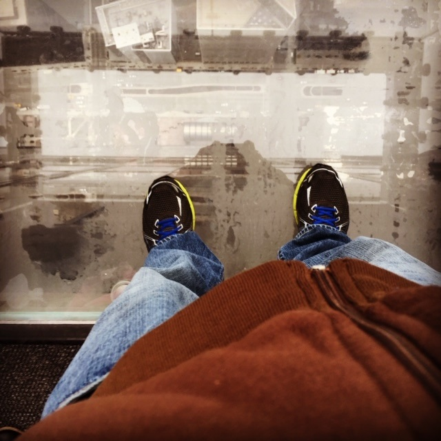
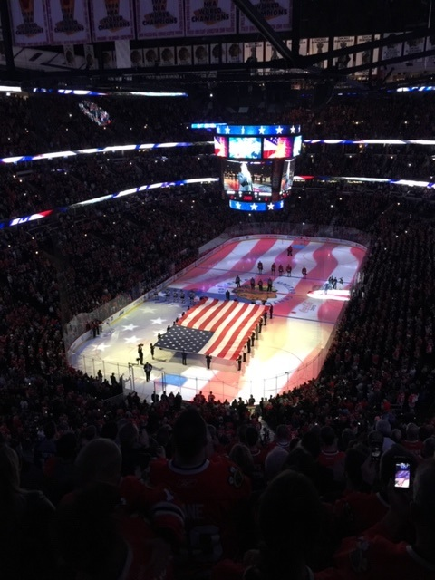

One of my best friends from my hometown moved to Chicago from Florida and lived there for over ten years. Throughout those years I made it a point to visit once a year during my birthday and spend a few days in Chicago. On this page I'm including a few pictures of my favorite tourist attractions in Chicago. I wouldn only advise for anyone who's never been to Chicago to only visit in Summer when there is no snow and you can enjoy your time being outdoors.


The Chicago River runs through downtown Chicago which has many boat tours. One year I chose to take an architectural boat tour and it was one of the best choices I made. The tour includes a double decker boat with a bar on it that steers through the Chicago River while the captain of the ship narrates the history of buildings on the river. This was one of the best tourist attractions I took while in Chicago and highly recommend it.

Fun Fact:Al Capone was head of the mob in Chicago during the 1920s and 1930s before being imprisoned at Alcatraz Island in San Franscisco.
Willis Tower is 103 story building in downtown chicago with a glass walk out. You'll stand in line and then be able to stand on the glass walkout as shown on my picture. This definately not for someone who is scared of heights. You will have an oustanding view of the city at 103 stories up.

Chicago is a great city for anyone looking to take a trip to a big, clean city. The food is spectacular, the city vibe is booming, and there are lots of museums and sights to see.
Below I've listed a travel blog for Chicago and three attractions with links that offer more detailed information about each attraction to visit.
| Top Attractions in Chicago | Websites |
|---|---|
| Cloud Gate | Chicago Bean |
| Willis Tower | Willis Tower |
| Architectural Boat Tour | Architectural Boat Tour |
Posted by: Juan Vega
Contact information: Juan.Vega1080@Gmail.com.